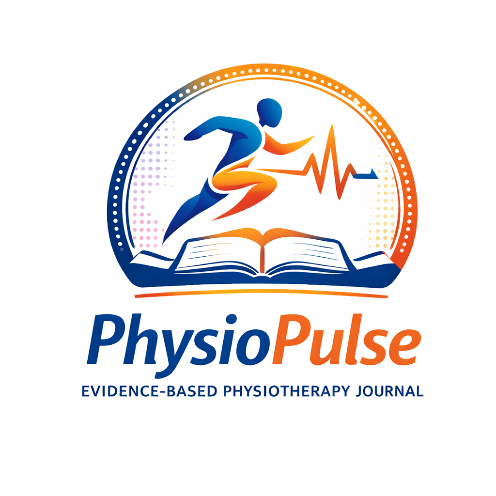

Criminal Negligence & IPC 304A Judicial Interpretation in Healthcare Cases

Medical Negligence & Liability Physiotherapy – Legal Review


Evidence-based physiotherapy research, clinical reviews, rehabilitation studies, and academic publications.